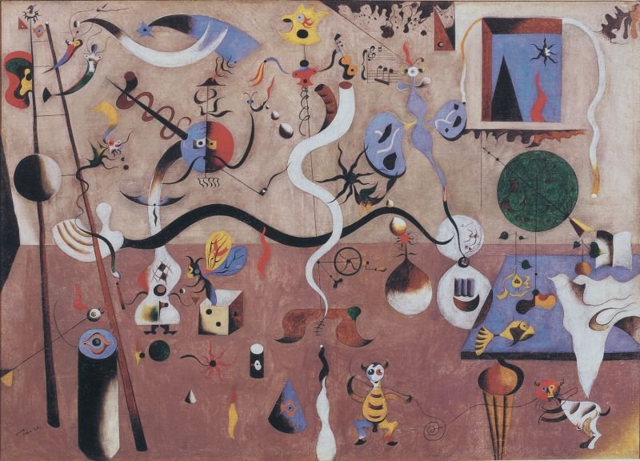

The Harlequin's Carnival
Joan Miró · 1924–25 · Oil on canvas · 66 × 90.5 cm · Albright–Knox Art Gallery, Buffalo
In copyright. Look and learn: shown for study, not for download.
Miró painted this between 1924 and 1925. At that point in his life he did not have much money for food and was on the brink of starvation. The cat at the bottom right is his own cat, which was always next to him as he painted, and the black triangle in the window at the top right is the Eiffel Tower.